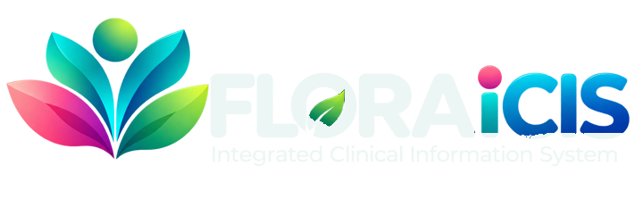

บันทึกทุกนาทีของผู้ป่วย แม้เครือข่ายโรงพยาบาลจะล่มEvery minute charted, even when the hospital network drops
FLORA iCIS ดึงค่าสัญญาณชีพจากเครื่องติดตามผู้ป่วยและเครื่องดมยาหลายยี่ห้อ บันทึกที่เครื่องข้างเตียง แล้วซิงก์ขึ้นศูนย์กลางเมื่อเครือข่ายกลับมาFLORA iCIS captures vitals from multi-brand monitors and anesthesia machines, records them at the bedside, and syncs to the hospital centre when the network returns.
3 เหตุผลที่ทีมวิสัญญีเลือก FLORA iCIS3 reasons anesthesia teams choose FLORA iCIS
เชื่อมเครื่องได้หลายยี่ห้อMulti-brand device capture
Serial, LAN, HL7 และ UDP ในเกตเวย์เดียว มีไดรเวอร์สำหรับ GE, Dräger และ B. Braun ไม่ต้องซื้อมิดเดิลแวร์แยกต่อเตียงSerial, LAN, HL7 and UDP in one gateway, with drivers for GE, Dräger and B. Braun. No per-bed proprietary middleware.
ทำงานได้แม้ออฟไลน์Works offline at the bedside
แต่ละห้องมีฐานข้อมูลของตัวเอง เคสไม่หยุดเมื่อเครือข่ายหรือเซิร์ฟเวอร์กลางมีปัญหาEach room keeps its own database, so a case never stops when the network or central server fails.
โรงพยาบาลแก้ฟอร์มเองได้Forms your team can edit
Form, Report และ Workflow Studio ให้ทีมแก้แบบฟอร์มและรายงานภาษาไทยได้เอง ไม่ต้องรอผู้ขายForm, Report and Workflow Studio let your team change Thai forms and reports without a vendor change request.
สี่ชั้น ตั้งแต่ข้างเตียงถึงคลาวด์Four tiers, bedside to cloud
Gateway
รับข้อมูลจากเครื่องและแปลงเป็นค่ามาตรฐานReceives device data and normalises it.
Leaf
สถานีบันทึกเคส พร้อมฐานข้อมูลในเครื่องCharting workstation with its own database.
Canopy
ดูทุกห้องและทุกเตียง รายงาน และเชื่อม HISEvery room and bed, reports, HIS link.
Root
ไลเซนส์และอัปเดตที่ลงลายเซ็นดิจิทัลLicences and signed updates.